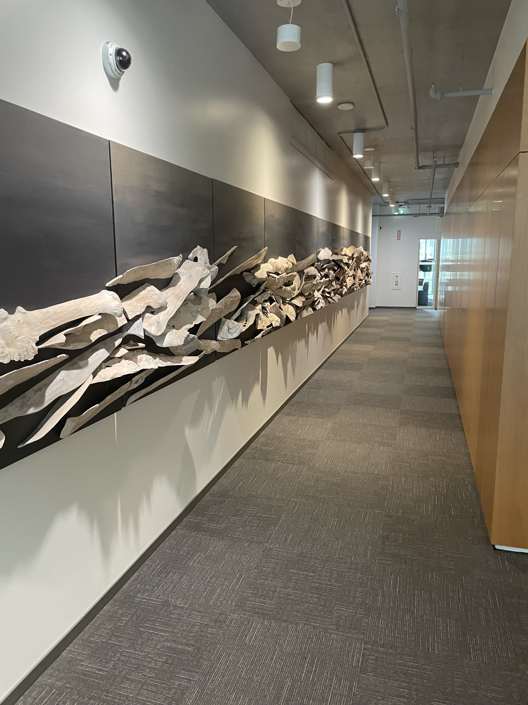

Resume
A walkthrough of my current and past experiences along with the skills I
have gained through it.

Resume
A walkthrough of my current and past experiences along with the skills I
have gained through it.
Education
Honours Bachelor of Science with High Distinction
University of Toronto, 2018-2023
-
Completion of a specialist in Computer Science (Co-op) -
Software Engineering and Major in Mathematics
Awards/Honours
-
Dean's List (Nov 2019, Sept 2020/21/22)
-
University of Toronto Scholar (Top 700 applicant) carrying a value of
$7,500 initial and $3,000 in subsequent years (twice)
-
Best project by City of Toronto in CSCC01:
Introduction to Software Engineering
Teachings
A list of all courses I have been apart of at the University of Toronto,
Department of Computer and Mathematical Science as a Teaching Assistant.
-
Engineering Large Software Systems - Head TA, CSCD01, Winter 2023.
-
Calculus II for Physical Sciences, MATA36, Winter 2023.
-
Calculus II for Mathematical Sciences, MATA37, Winter 2023.
-
Discrete Mathematics, CSC/MATA67, Fall 2022.
-
Introduction to Databases - Head TA, CSCC43, Fall 2022.
-
Linear Algebra II, MATB24, Fall 2022.
-
Techniques of the Calculus of Several Variables I, MATB41, Fall 2022.
-
Groups and Symmetry, MATC01, Fall 2022.
-
Calculus II for Mathematical Sciences, MATA37, Summer 2022.
-
Techniques of the Calculus of Several Variables I, MATB41, Summer 2022.
-
Calculus II for Mathematical Sciences, MATA37, Winter 2022.
-
Discrete Mathematics, CSC/MATA67, Fall 2021.
-
Calculus for Management I - Two Tutorials, MATA32, Fall 2021.
-
Calculus II for Mathematical Sciences, MATA37, Winter 2021.